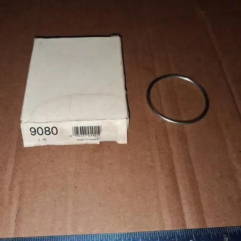
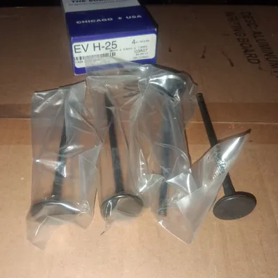
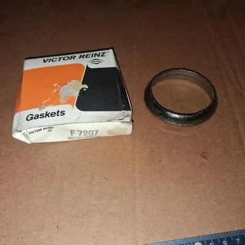
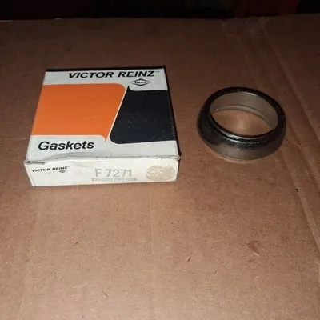

Exhaust Gasket
AP Exhaust 8689 Flange Gasket 88-11 Ford Mazda Escort Probe Miata 626 NOS
8689
Fits 1988-2002 Mazda 626 · 1990-1997 Mazda Miata (229 listed)
$13.99
View details25 parts in Exhaust Parts from AP Exhaust, Victor Reinz and National and more, each with photos, part numbers and condition on its own page. Open a part to see every vehicle it is listed for.
25 parts
Online checkout through Square. Ships from Carbondale, PA, or pick up by confirmed appointment only. Fitment question? Message us.
8689
Fits 1988-2002 Mazda 626 · 1990-1997 Mazda Miata (229 listed)
$13.99
View details
AP-8724
Fits 2005-2015 Toyota Tacoma · 1978-1981 Datsun 510 (241 listed)
$18.99
View details
8729
Fits 1993-1996 Mercury Villager · 1993-1998 Nissan Quest (113 listed)
$15.99
View details
8749
Fits 2013-2016 Toyota Corolla · 2013-2016 Toyota Tacoma
$16.99
View details
8750
Fits 1990-1993 Volvo 240 · 1985-1992 Volvo 740 (105 listed)
$12.99
View details
8751
Fits 1985-1989 Subaru GL · 1987-1994 Subaru Justy (18 listed)
$13.99
View details
8772
Fits 1992-2011 Ford Crown Victoria · 1990-1991 Ford LTD Crown Victoria (30 listed)
$17.99
View details
9080
Fits 1980-1989 Honda Accord · 1988-1991 Honda CRX (223 listed)
$14.99
View details
9081
Fits 1991-1997 Isuzu Rodeo · 1987-1995 Nissan Pathfinder (147 listed)
$21.99
View details
9095
Fits 1991-2011 Ford Explorer · 1986-2011 Ford Ranger (3 listed)
$19.99
View details
9235
Fits 1986-1990 Ford Bronco II · 1986-1990 Ford Ranger (207 listed)
$26.99
View details
01-10805S
Fits 1998-2006 Audi A4 · 2002-2006 Audi A4 Quattro (227 listed)
$24.99
View details
24154
Interchange 19187570
$24.99
View details
9025
Interchange 085337039763
$22.99
View details
H-25
Fits 1992-1995 Honda Civic (11 listed)
$24.99
View details
EV SU-11
Fits 1996-1997 Subaru
$24.99
View details
F7210
Fits 1986-1988 Buick Century · 1982-1992 Chevrolet Camaro (319 listed)
$19.99
View details
F17250
Fits 1964-1973 Ford Mustang · 1970-1971 Ford Torino (78 listed)
$12.99
View details
F7139
Fits 1990 GMC C6000 · 1990 Chevrolet C60 (5 listed)
$18.99
View details
F7207
Fits 1975-1985 Oldsmobile Cutlass Supreme · 1977-1985 Buick Electra (280 listed)
$19.99
View details
F7209
Fits 2012-2015 Honda Civic · 2013-2015 Acura ILX (48 listed)
$17.99
View details
F7271
Fits 1982-1995 Chevrolet S10 · 1982-1990 GMC S15 (253 listed)
$17.99
View details
F7275
Fits 1984-1986 Chrysler Laser · 1984-1988 Chrysler LeBaron (187 listed)
$19.99
View details
F7395
Fits 2008-2012 Ford Taurus (704 listed)
$20.99
View details
F7398
Fits 1983-1986 Chevrolet Camaro · 1985-1993 Chevrolet S10 (309 listed)
$13.99
View details